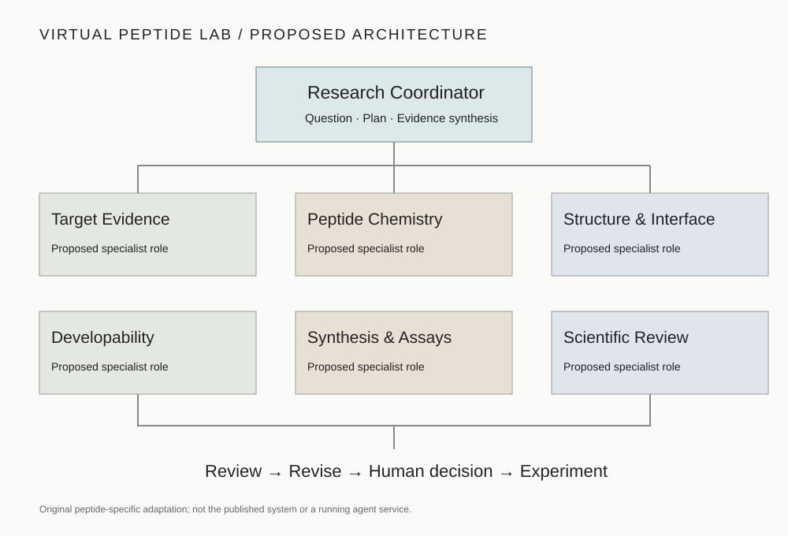

PROJECT 06 / VIRTUAL BIOLOGY
Virtual Peptide Lab.
A coordinated research workspace for peptide discovery.
Connect target evidence, complete peptide chemistry, structural assessment and experimental planning through specialist work packages and independent scientific review.
Proposed multi-agent architecture · Browser task planner available

Research Task WorkspaceCreate and download a structured brief · local planning tool
Create a research task brief locally. This form does not contact AI models, submit jobs or run molecular calculations.
No task brief created yet.
How the work progresses6 stages · question, evidence, specialists, review and validation
Adapted from the paper’s coordinator–specialist–reviewer loop. The peptide-specific roles and checks below are our proposed extension.
- 01
Frame the question
Define the target, biological context, peptide format, intended route and decision to be supported.
- 02
Inventory evidence
Identify available sequences, complete chemical definitions, structures, assays and data provenance.
- 03
Assign specialist tasks
Prepare work packages for target, chemistry, structure, developability and experimental planning.
- 04
Evaluate candidates
Retain endpoint-specific results, versions and uncertainties rather than collapsing them into an unexplained score.
- 05
Review and revise
Ask the independent reviewer to challenge methods and claims; return unresolved issues to the relevant specialist.
- 06
Plan validation
Produce a traceable shortlist and assay plan for human review and experimental follow-up.
The Virtual Research TeamCoordinator and proposed specialist roles
Research Coordinator / virtual CSO
Clarify objectives, assign tasks, reconcile conflicts and synthesize evidence. Human researchers define the scientific question and review decisions.
Target Evidence
Connect disease context, target expression and human evidence.
Peptide Chemistry
Specify sequence, stereochemistry, cyclization, linkers and conjugates.
Structure & Interface
Review target state, binding site, candidate poses and confidence.
Developability
Assess solubility, aggregation, proteolysis and route-specific properties.
Synthesis & Assays
Plan synthesis feasibility, analytical QC and fit-for-purpose experiments.
Scientific Review
Audit provenance, methods, uncertainty and unsupported conclusions.
Tools & Connected ProjectsReference implementation, existing laboratory projects and resources
Reference framework — The Virtual Biotech
The authors provide a multi-agent framework, specialist prompts, MCP servers and a research interface. This project adopts its organizational idea; the published implementation has not been deployed on this website.
Authors’ code and setup documentation ↗Existing laboratory projects
Shared data resources
Existing browsers provide the records described on their own pages. No new peptide assay collection or simulation engine is connected by this project page.
Planned execution integration
Future execution requires configured data access, model-specific compute services, chemistry-preserving inputs, immutable job records and reviewable output artifacts. The browser planner generates task specifications only.
Evaluation MetricsChemical identity, model evidence, assays and reproducibility
Chemical identity
Retain noncanonical residues, stereochemistry, terminal groups, covalent closures, linkers and conjugates. A bare sequence is not a complete modified-peptide structure.
Structure and interface
Record model-specific confidence, contact geometry and reference comparisons. Pose confidence and interface metrics do not establish affinity or activity.
Developability and exposure
Keep solubility, permeability, proteolysis and serum-stability endpoints distinct. A predicted stability endpoint is not measured human elimination half-life.
Assay evidence
Report binding, functional potency and selectivity separately, with assay conditions, units, controls, replicates and uncertainty.
Agent and workflow quality
Evaluate task completion, source correctness, code reproducibility, independent reviewer findings and the resolution of disagreements.
Decision traceability
Preserve inputs, data and model versions, evidence status, exclusion reasons and the human decision. No published-paper performance is claimed for this proposed lab.
Scientific foundation.
H. G. Zhang, P. Eckmann, J. Miao, A. B. Mahon and J. Zou. The Virtual Biotech: A multi-agent AI framework for therapeutic discovery and development. Science 394, eaeg6779 (2026). DOI: 10.1126/science.aeg6779 ↗
The paper organizes therapeutic research around a virtual CSO, specialist scientists, tool access and scientific review. Its reported studies are not peptide-design validation. Our peptide-specific organization, task templates and illustration are proposed adaptations.
The workspace currently prepares research briefs in the browser. Live agent orchestration, molecular predictions, synthesis and assays require separate execution infrastructure and validation.
Explore Virtual Biology →